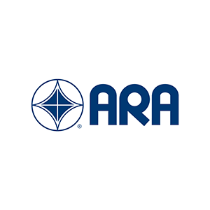

My time on:
Commercial Rocket Design Leadership: (May 2019 - August 2021)
Purdue Orbital is a student organization determined to make achieving LEO cheaper and more accessible by developing a balloon-suspended rocket launch platform, or "Rockoon."
Purdue Orbital is a student organization determined to make achieving LEO cheaper and more accessible by developing a balloon-suspended rocket launch platform, or "Rockoon."
Since the atmosphere is not nearly as dense only 18 km above sea level, a launch vehicle could put a payload in orbit with much less fuel, and therefore much cheaper.
The concept originated in the 1960's, but to this day, no one has done it successfully.
A company called Leo Aerospace, formed by Purdue Orbital alum, furthered the field by launching from a platform suspended beneath a hot-air balloon. Unfortunately, shortly after this launch the company shut down due to insolvency. Still, Orbital's mission continues.
A company called Leo Aerospace, formed by Purdue Orbital alum, furthered the field by launching from a platform suspended beneath a hot-air balloon. Unfortunately, shortly after this launch the company shut down due to insolvency. Still, Orbital's mission continues.
While the organization was developing the Rockoon technology, we would need a rocket to test it with! That's where my team - the Commercial Rocket team - came in. The goal of our subteam was to create a solid launch vehicle tailored for use on the Rockoon. We would use commercially available motors, hence the name, and design everything else ourselves. I was a part of this group for four years, and led it for two.
Under my leadership the team would: develop a simulation rocket and flight computer housing for a balloon flight test, experiment with proprietary propellant mixtures at Zucrow Labs, and inspire a dozen elementary school classes via outreach events. I also guided each team member through Level 2 High-Powered Rocketry Certification, with one member reaching Level 3 (budget constraints dictated that not everyone could earn it). All in the midst of the pandemic.
But our magnum opus?
Hapsis Alpha.
Hapsis Alpha: (Launched February 16, 2020)
9 feet long. 4.5 inches thick. >5100 N·s of total impulse. Hapsis Alpha was designed from the ground up to launch from the stratosphere and scale up for the future.
The body was entirely made from machined Aluminum 6061, chosen for its strength, particularly at cold temperatures. The nosecone: fiberglass. This rocket was built to hold the largest motor we could legally buy, an Aerotech L2200, and would accept even larger ones.
The fin can was designed so that the fins could be modular, needing only the same root profile and aluminum thickness. The fins themselves were created with a focus on manufacturability, after ensuring they could maintain between 1.5 and 2 calibers of stability, depending on payload mass.
Our avionics bay contained a dual-deployment RRC3 flight computer with a Stratologger altimeter for data redundancy. For the main parachute, we used a tradition black powder (BP) ejection system to keep it simple and compact. For the drogue, however, we used a CO2 Peregrine kit for ejection to ensure functionality at high altitudes/low pressures.
It should be noted that the CO2 system still uses a very small BP charge to activate, but it occurs in a tight space that I expect would be able to handle the pressure differential. Using CO2 also allowed us to tailor our ejection force to different altitudes.
The body tubes were manufactured on a 5-axis CNC mill and the fins were cut with a waterjet, all performed at Purdue's Bechtel Innovation and Design Center.
How did we test it?
What went wrong? How was it solved?
Hapsis Alpha launched successfully from a hanging test platform on February 16, 2020 and reached an altitude of 8,322 feet (2537m).
9 feet long. 4.5 inches thick. >5100 N·s of total impulse. Hapsis Alpha was designed from the ground up to launch from the stratosphere and scale up for the future.
OpenRocket design
The body was entirely made from machined Aluminum 6061, chosen for its strength, particularly at cold temperatures. The nosecone: fiberglass. This rocket was built to hold the largest motor we could legally buy, an Aerotech L2200, and would accept even larger ones.
The fin can was designed so that the fins could be modular, needing only the same root profile and aluminum thickness. The fins themselves were created with a focus on manufacturability, after ensuring they could maintain between 1.5 and 2 calibers of stability, depending on payload mass.
Modular motor mount & fin can
Avionics bay & bulkheads
Our avionics bay contained a dual-deployment RRC3 flight computer with a Stratologger altimeter for data redundancy. For the main parachute, we used a tradition black powder (BP) ejection system to keep it simple and compact. For the drogue, however, we used a CO2 Peregrine kit for ejection to ensure functionality at high altitudes/low pressures.
It should be noted that the CO2 system still uses a very small BP charge to activate, but it occurs in a tight space that I expect would be able to handle the pressure differential. Using CO2 also allowed us to tailor our ejection force to different altitudes.
The body tubes were manufactured on a 5-axis CNC mill and the fins were cut with a waterjet, all performed at Purdue's Bechtel Innovation and Design Center.
How did we test it?
| Main & drogue parachute deployment tests were performed onto a tarp on the sand volleyball court. |
| Critical structures, like the rail guides, were pull tested with a hand scale. |
| Radio attenuation was tested by giving the flight computer commands from varying distances. |
| The avionics were thermally tested by being immersed in dry ice and continuously operated. |
| The main chute got wrapped around a power line during deployment testing. | With an ESD bracelet, welding gloves, and a delicate touch. |
| The TeleMega flight computer short circuited during avionics thermal testing. | I spoke with the manufacturer and attempted repair, but ultimately replaced it with the RRC3 I had on hand for the launch. |
| The main chute body tube was knocked over and dented. | I heat-treated the aluminum by thermally cycling it with snow and a heat gun. |
| I misheard the motor assembly instructions from the vendor, costing us a launch day spent waiting for the adhesive to cure. | Solved by communicating with the certified launch supervisors and buying everyone dinner afterwards! |
Hapsis Alpha Launch
Nick's Launch Operations Vlog
"Gus" the Vacuum Chamber:
Since the primary mission of the team involved launching rockets from the thinnest parts of the atmosphere, we needed to ensure the motors would actually ignite under such conditions. Cold can be easily mitigated by using specific binders in the propellant, implementing heaters inside the motor casing, and building the casing from composite for insulation. A lack of air density for ignition and combustion, however, is a whole other problem.
Since the primary mission of the team involved launching rockets from the thinnest parts of the atmosphere, we needed to ensure the motors would actually ignite under such conditions. Cold can be easily mitigated by using specific binders in the propellant, implementing heaters inside the motor casing, and building the casing from composite for insulation. A lack of air density for ignition and combustion, however, is a whole other problem.
As soon as we clocked this, I set out to empirically find the lowest air pressure I could get solid rocket motors to consistently ignite at. To test this, I put together a vacuum chamber as cheaply and quickly as possible.
Ultimately, I kept the costs under $150, had the thing operational within a month, and even with ignition leads running into the chamber, it was capable of pulling 0.3 inHg (0.01 atm) pressure - far closer to absolute vacuum than we would end up needing.
The internal test setup was 3D-printed, and though I designed a water reservoir to cool the blast diverter, the two pieces would still need replacing every few tests. I found that putting a layer of masking tape on both mating surfaces (the inner chamber wall and the bracket mounting edge) and then cementing the tape layers together with a quick-dry epoxy allowed for rapid mount replacement without compromising structural integrity.
The internal test setup was 3D-printed, and though I designed a water reservoir to cool the blast diverter, the two pieces would still need replacing every few tests. I found that putting a layer of masking tape on both mating surfaces (the inner chamber wall and the bracket mounting edge) and then cementing the tape layers together with a quick-dry epoxy allowed for rapid mount replacement without compromising structural integrity.
 Vacuum chamber internals, post-test
Vacuum chamber internals, post-test
Once the test chamber was built, I set to work sealing Estes E-class motors in it and attempting to ignite them, starting at the lowest pressure the chamber could pull and working up on a continuum.
I found that for consistent ignition (5 consecutive successes), the motors required a minimum chamber pressure of 1.3 inHg or 0.043 atm.
This is just shy of the 0.05 atm we calculated would be present at our goal launch height of 18km. There's a little margin baked in there, but we concluded that it would be worthwhile for test flights to launch a little lower in the atmosphere until the organization switched to using liquid-propelled rockets.
I affectionately dubbed the chamber "Gus," after the asparagus pot that composed his plenum walls. After the ignition tests concluded, Gus would continue to see use for adhesive degassing, silicone molding, and avionics testing.
I affectionately dubbed the chamber "Gus," after the asparagus pot that composed his plenum walls. After the ignition tests concluded, Gus would continue to see use for adhesive degassing, silicone molding, and avionics testing.
High-Powered Rocketry Certification:
My first task on Purdue Orbital was to achieve Level 1 High-Powered Rocketry certification. As was everyone's on the Commercial Rocket team.
Being the first rocket I ever built, the Starwhal now stands tall in my apartment as a decoration, adorned with christmas lights.
Almost four years later, I took the lessons I learned from my own certification and guided my teammates to their Level 2 (and a Level 3!) certifications. This was my last accomplishment on Purdue Orbital.
Funny how these things come full circle.
My first task on Purdue Orbital was to achieve Level 1 High-Powered Rocketry certification. As was everyone's on the Commercial Rocket team.
Commercial Rocket team, circa 2017
Being the first rocket I ever built, the Starwhal now stands tall in my apartment as a decoration, adorned with christmas lights.
Almost four years later, I took the lessons I learned from my own certification and guided my teammates to their Level 2 (and a Level 3!) certifications. This was my last accomplishment on Purdue Orbital.
Funny how these things come full circle.
Organizations:
